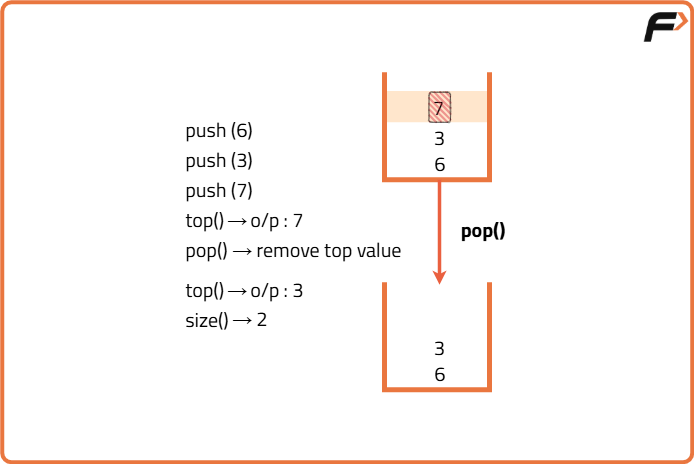

Implement Stack using Array
Problem Statement:
Implement a Last-In-First-Out (LIFO) stack using an array. The implemented stack should support the following operations: push, pop, peek, and isEmpty.
Implement the ArrayStack class:
void push(int x): Pushes element x onto the stack.
int pop(): Removes and returns the top element of the stack.
int top(): Returns the top element of the stack without removing it.
boolean isEmpty(): Returns true if the stack is empty, false otherwise.
Examples
Example 1: Input: ["ArrayStack", "push", "push", "top", "pop", "isEmpty"] [[], [5], [10], [], [], []] Output: [null, null, null, 10, 10, false] Explanation: ArrayStack stack = new ArrayStack(); - stack.push(5); - stack.push(10); - stack.top(); // returns 10 - stack.pop(); // returns 10 - stack.isEmpty(); // returns false Example 2: Input: ["ArrayStack", "isEmpty", "push", "pop", "isEmpty"] [[], [], [1], [], []] Output: [null, true, null, 1, true] Explanation: ArrayStack stack = new ArrayStack(); - stack.push(1); - stack.pop(); // returns 1 - stack.isEmpty(); // returns true
Disclaimer: Here is the practice link to help you assess your knowledge better. It's highly recommend trying to solve it before looking at the solution.
Approach
Algorithm
- Declare an Array of Particular Size: Initialize an array that will hold the elements of the stack. The size of the array is defined when the stack is created.
- Define a Variable “Top” and Initialize It as -1: The "top" variable keeps track of the index of the last added element in the stack. Initializing it to -1 indicates that the stack is empty.
- Push Operation (push(int x)): To push an element onto the stack:
- Increment the top index by one and insert the element at this position in the array.
- If the stack is full (top is equal to the last index of the array), throw a stack overflow exception.
- Pop Operation (pop()): To pop an element from the stack:
- Check if the stack is not empty by ensuring top is not equal to -1. If the stack is empty, throw a stack underflow exception.
- If the stack is not empty, return the element at the top index and then decrement the top index by one.
- Top Operation (top()): To get the top element without removing it:
- Check if the stack is not empty. If it is empty, throw an exception.
- If the stack is not empty, return the element at the top index.
- IsEmpty Operation (isEmpty()): To check if the stack is empty:
- Check if the top index is -1.
- Size Operation (size()): To get the current size of the stack:
- Return top + 1.

Code
#include <bits/stdc++.h>
using namespace std;
class ArrayStack {
private:
// Array to hold elements
int* stackArray;
// Maximum capacity
int capacity;
// Index of top element
int topIndex;
public:
// Constructor
ArrayStack(int size = 1000) {
capacity = size;
stackArray = new int[capacity];
// Initialize stack as empty
topIndex = -1;
}
// Destructor
~ArrayStack() {
delete[] stackArray;
}
// Pushes element x
void push(int x) {
if (topIndex >= capacity - 1) {
cout << "Stack overflow" << endl;
return;
}
stackArray[++topIndex] = x;
}
// Removes and returns top element
int pop() {
if (isEmpty()) {
cout << "Stack is empty" << endl;
// Return invalid value
return -1;
}
return stackArray[topIndex--];
}
// Returns top element
int top() {
if (isEmpty()) {
cout << "Stack is empty" << endl;
return -1;
}
return stackArray[topIndex];
}
/* Returns true if the
stack is empty, false otherwise*/
bool isEmpty() {
return topIndex == -1;
}
};
// Main Function
int main() {
ArrayStack stack;
vector<string> commands = {"ArrayStack", "push", "push", "top", "pop", "isEmpty"};
vector<vector<int>> inputs = {{}, {5}, {10}, {}, {}, {}};
for (size_t i = 0; i < commands.size(); ++i) {
if (commands[i] == "push") {
stack.push(inputs[i][0]);
cout << "null ";
} else if (commands[i] == "pop") {
cout << stack.pop() << " ";
} else if (commands[i] == "top") {
cout << stack.top() << " ";
} else if (commands[i] == "isEmpty") {
cout << (stack.isEmpty() ? "true" : "false") << " ";
} else if (commands[i] == "ArrayStack") {
cout << "null ";
}
}
return 0;
}Complexity Analysis
Time Complexity: O(1) for all operations (push, pop, top, isEmpty).
Space Complexity: O(N), where N is the maximum capacity of the stack, as we are using an array to store the elements.